# pip install pandas pyreadstatData Description
import pandas as pd
import matplotlib.pyplot as plt
import pyrsm as rsmkarlan_df = pd.read_stata('karlan_list_2007.dta')
karlan_df.to_csv('karlan_list_2007.csv', index=False)karlan_df.info()<class 'pandas.core.frame.DataFrame'>
RangeIndex: 50083 entries, 0 to 50082
Data columns (total 51 columns):
# Column Non-Null Count Dtype
--- ------ -------------- -----
0 treatment 50083 non-null int8
1 control 50083 non-null int8
2 ratio 50083 non-null category
3 ratio2 50083 non-null int8
4 ratio3 50083 non-null int8
5 size 50083 non-null category
6 size25 50083 non-null int8
7 size50 50083 non-null int8
8 size100 50083 non-null int8
9 sizeno 50083 non-null int8
10 ask 50083 non-null category
11 askd1 50083 non-null int8
12 askd2 50083 non-null int8
13 askd3 50083 non-null int8
14 ask1 50083 non-null int16
15 ask2 50083 non-null int16
16 ask3 50083 non-null int16
17 amount 50083 non-null float32
18 gave 50083 non-null int8
19 amountchange 50083 non-null float32
20 hpa 50083 non-null float32
21 ltmedmra 50083 non-null int8
22 freq 50083 non-null int16
23 years 50082 non-null float64
24 year5 50083 non-null int8
25 mrm2 50082 non-null float64
26 dormant 50083 non-null int8
27 female 48972 non-null float64
28 couple 48935 non-null float64
29 state50one 50083 non-null int8
30 nonlit 49631 non-null float64
31 cases 49631 non-null float64
32 statecnt 50083 non-null float32
33 stateresponse 50083 non-null float32
34 stateresponset 50083 non-null float32
35 stateresponsec 50080 non-null float32
36 stateresponsetminc 50080 non-null float32
37 perbush 50048 non-null float32
38 close25 50048 non-null float64
39 red0 50048 non-null float64
40 blue0 50048 non-null float64
41 redcty 49978 non-null float64
42 bluecty 49978 non-null float64
43 pwhite 48217 non-null float32
44 pblack 48047 non-null float32
45 page18_39 48217 non-null float32
46 ave_hh_sz 48221 non-null float32
47 median_hhincome 48209 non-null float64
48 powner 48214 non-null float32
49 psch_atlstba 48215 non-null float32
50 pop_propurban 48217 non-null float32
dtypes: category(3), float32(16), float64(12), int16(4), int8(16)
memory usage: 8.9 MBkarlan_df.isnull().sum()treatment 0
control 0
ratio 0
ratio2 0
ratio3 0
size 0
size25 0
size50 0
size100 0
sizeno 0
ask 0
askd1 0
askd2 0
askd3 0
ask1 0
ask2 0
ask3 0
amount 0
gave 0
amountchange 0
hpa 0
ltmedmra 0
freq 0
years 1
year5 0
mrm2 1
dormant 0
female 1111
couple 1148
state50one 0
nonlit 452
cases 452
statecnt 0
stateresponse 0
stateresponset 0
stateresponsec 3
stateresponsetminc 3
perbush 35
close25 35
red0 35
blue0 35
redcty 105
bluecty 105
pwhite 1866
pblack 2036
page18_39 1866
ave_hh_sz 1862
median_hhincome 1874
powner 1869
psch_atlstba 1868
pop_propurban 1866
dtype: int64group_cols = ["treatment", "control"]
ratio_cols = ["ratio", "ratio2", "ratio3"]
size_cols = ["size25", "size50", "size100", "sizeno"]
askd_cols = ["ask", "askd1", "askd2", "askd3"]
ask_cols = ["ask1", "ask2", "ask3"]
state_cols = ["red0", "blue0"]
county_cols = ["redcty", "bluecty"]karlan_df["group"] = karlan_df[group_cols].idxmax(axis=1)
karlan_df["county"] = karlan_df[county_cols].idxmax(axis=1).map({"redcty": "red", "bluecty": "blue"})
karlan_df["state"] = karlan_df[state_cols].idxmax(axis=1).map({"red0": "red", "blue0": "blue"})
karlan_df/tmp/ipykernel_38392/2551348540.py:2: FutureWarning: The behavior of DataFrame.idxmax with all-NA values, or any-NA and skipna=False, is deprecated. In a future version this will raise ValueError
karlan_df["county"] = karlan_df[county_cols].idxmax(axis=1).map({"redcty": "red", "bluecty": "blue"})
/tmp/ipykernel_38392/2551348540.py:3: FutureWarning: The behavior of DataFrame.idxmax with all-NA values, or any-NA and skipna=False, is deprecated. In a future version this will raise ValueError
karlan_df["state"] = karlan_df[state_cols].idxmax(axis=1).map({"red0": "red", "blue0": "blue"})| treatment | control | ratio | ratio2 | ratio3 | size | size25 | size50 | size100 | sizeno | ... | pblack | page18_39 | ave_hh_sz | median_hhincome | powner | psch_atlstba | pop_propurban | group | county | state | |
|---|---|---|---|---|---|---|---|---|---|---|---|---|---|---|---|---|---|---|---|---|---|
| 0 | 0 | 1 | Control | 0 | 0 | Control | 0 | 0 | 0 | 0 | ... | 0.527769 | 0.317591 | 2.10 | 28517.0 | 0.499807 | 0.324528 | 1.000000 | control | blue | blue |
| 1 | 0 | 1 | Control | 0 | 0 | Control | 0 | 0 | 0 | 0 | ... | NaN | NaN | NaN | NaN | NaN | NaN | NaN | control | red | blue |
| 2 | 1 | 0 | 1 | 0 | 0 | $100,000 | 0 | 0 | 1 | 0 | ... | 0.011948 | 0.276128 | 2.48 | 51175.0 | 0.721941 | 0.192668 | 1.000000 | treatment | blue | blue |
| 3 | 1 | 0 | 1 | 0 | 0 | Unstated | 0 | 0 | 0 | 1 | ... | 0.010760 | 0.279412 | 2.65 | 79269.0 | 0.920431 | 0.412142 | 1.000000 | treatment | red | blue |
| 4 | 1 | 0 | 1 | 0 | 0 | $50,000 | 0 | 1 | 0 | 0 | ... | 0.127421 | 0.442389 | 1.85 | 40908.0 | 0.416072 | 0.439965 | 1.000000 | treatment | blue | red |
| ... | ... | ... | ... | ... | ... | ... | ... | ... | ... | ... | ... | ... | ... | ... | ... | ... | ... | ... | ... | ... | ... |
| 50078 | 1 | 0 | 1 | 0 | 0 | $25,000 | 1 | 0 | 0 | 0 | ... | 0.089959 | 0.257265 | 2.13 | 45047.0 | 0.771316 | 0.263744 | 1.000000 | treatment | blue | red |
| 50079 | 0 | 1 | Control | 0 | 0 | Control | 0 | 0 | 0 | 0 | ... | 0.108889 | 0.288792 | 2.67 | 74655.0 | 0.741931 | 0.586466 | 1.000000 | control | blue | blue |
| 50080 | 0 | 1 | Control | 0 | 0 | Control | 0 | 0 | 0 | 0 | ... | 0.021311 | 0.178689 | 2.36 | 26667.0 | 0.778689 | 0.107930 | 0.000000 | control | red | blue |
| 50081 | 1 | 0 | 3 | 0 | 1 | Unstated | 0 | 0 | 0 | 1 | ... | 0.008257 | 0.225619 | 2.57 | 39530.0 | 0.733988 | 0.184768 | 0.634903 | treatment | red | blue |
| 50082 | 1 | 0 | 3 | 0 | 1 | $25,000 | 1 | 0 | 0 | 0 | ... | 0.074112 | 0.340698 | 3.70 | 48744.0 | 0.717843 | 0.127941 | 0.994181 | treatment | blue | blue |
50083 rows × 54 columns
group = karlan_df["group"].value_counts(normalize=True)
group.plot(kind="bar", color="orange")
plt.title("Group Distribution")
plt.xlabel("Group")
plt.ylabel("Proportion")
plt.xticks(rotation=0)
for i in range(len(group)):
plt.text(i, group[i], f"{round(group[i]*100, 2)}%", ha='center', va='bottom')
plt.show()group = karlan_df["group"].value_counts(normalize=True)
group.plot(kind="bar", color="orange")
plt.title("Group Distribution")
plt.xlabel("Group")
plt.ylabel("Proportion")
plt.xticks(rotation=0)
for i in range(len(group)):
plt.text(i, group[i], f"{round(group[i]*100, 2)}%", ha='center', va='bottom')
plt.show()/tmp/ipykernel_38392/2886523009.py:8: FutureWarning: Series.__getitem__ treating keys as positions is deprecated. In a future version, integer keys will always be treated as labels (consistent with DataFrame behavior). To access a value by position, use `ser.iloc[pos]`
plt.text(i, group[i], f"{round(group[i]*100, 2)}%", ha='center', va='bottom')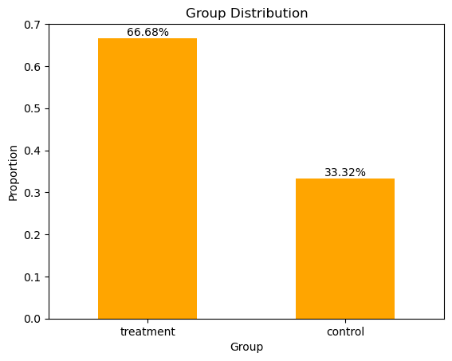
ratios = karlan_df["ratio"].map({1: "1:1", 2: "2:1", 3: "3:1", "Control": "Control"}).value_counts(normalize=True)
ratios.plot(kind="bar", color="orange")
plt.title("Distribution of Match Ratios")
plt.xlabel("Ratio")
plt.ylabel("Proportion")
plt.xticks(rotation=0)
for i in range(len(ratios)):
plt.text(i, ratios[i], f"{round(ratios[i]*100, 2)}%", ha='center', va='bottom')
plt.show()/tmp/ipykernel_38392/3747464993.py:8: FutureWarning: Series.__getitem__ treating keys as positions is deprecated. In a future version, integer keys will always be treated as labels (consistent with DataFrame behavior). To access a value by position, use `ser.iloc[pos]`
plt.text(i, ratios[i], f"{round(ratios[i]*100, 2)}%", ha='center', va='bottom')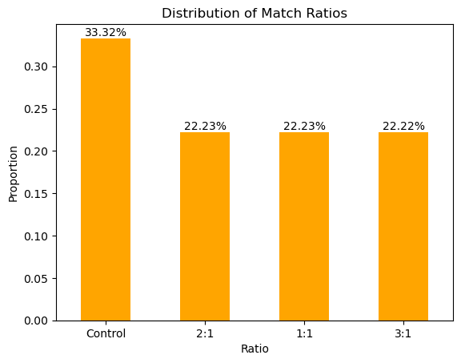
sizes = karlan_df["size"].value_counts(normalize=True)
sizes.plot(kind="bar", color="orange")
plt.title("Distribution of Match thresholds")
plt.xlabel("Size")
plt.ylabel("Proportion")
for i in range(len(sizes)):
plt.text(i, sizes[i], f"{round(sizes[i]*100, 2)}%", ha='center', va='bottom')
plt.xticks(rotation=0)
plt.show()/tmp/ipykernel_38392/248569292.py:7: FutureWarning: Series.__getitem__ treating keys as positions is deprecated. In a future version, integer keys will always be treated as labels (consistent with DataFrame behavior). To access a value by position, use `ser.iloc[pos]`
plt.text(i, sizes[i], f"{round(sizes[i]*100, 2)}%", ha='center', va='bottom')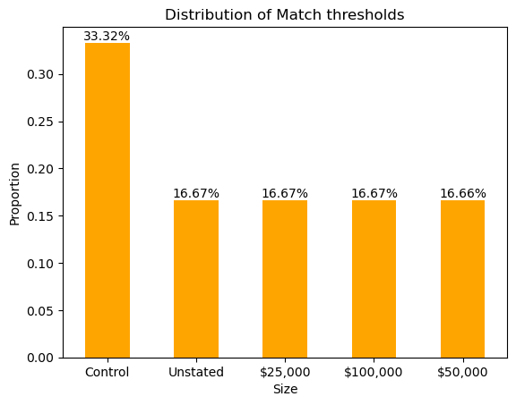
asks = karlan_df["ask"].value_counts(normalize=True)
asks.plot(kind="bar", color="orange")
plt.title("Distribution of Highest previous contribution (for suggestion)")
plt.xlabel("Ask")
plt.ylabel("Proportion")
for i in range(len(asks)):
plt.text(i, asks[i], f"{round(asks[i]*100, 2)}%", ha='center', va='bottom')
plt.xticks(rotation=0)
plt.show()/tmp/ipykernel_38392/182013770.py:7: FutureWarning: Series.__getitem__ treating keys as positions is deprecated. In a future version, integer keys will always be treated as labels (consistent with DataFrame behavior). To access a value by position, use `ser.iloc[pos]`
plt.text(i, asks[i], f"{round(asks[i]*100, 2)}%", ha='center', va='bottom')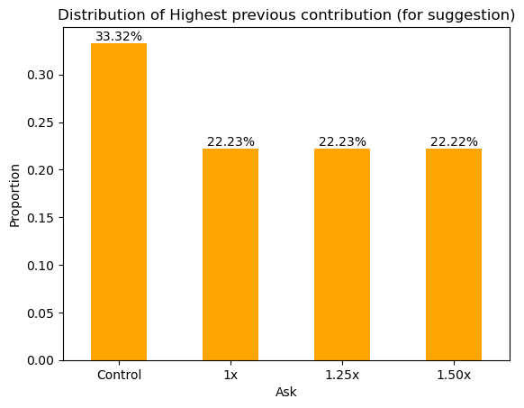
gave = karlan_df["gave"].value_counts(normalize=True)
ax = gave.plot(kind="pie", autopct='%1.1f%%', startangle=90, colors=["lightblue","lightpink"])
plt.title("Response rate of Donations")
plt.legend(title="Gave", loc="upper right")
plt.show()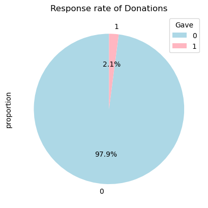
ax = karlan_df[karlan_df['gave'] == 1].groupby("group")["amount"].mean()
ax.plot(kind='bar', color='lightblue')
plt.title("Average Dollar Given Amount by group")
plt.xlabel("group")
plt.ylabel("Average Amount")
plt.xticks(rotation=0)
for i in range(len(ax)):
plt.text(i, ax[i], f"{round(ax[i])}", ha='center', va='bottom')
plt.show()/tmp/ipykernel_38392/1169144851.py:9: FutureWarning: Series.__getitem__ treating keys as positions is deprecated. In a future version, integer keys will always be treated as labels (consistent with DataFrame behavior). To access a value by position, use `ser.iloc[pos]`
plt.text(i, ax[i], f"{round(ax[i])}", ha='center', va='bottom')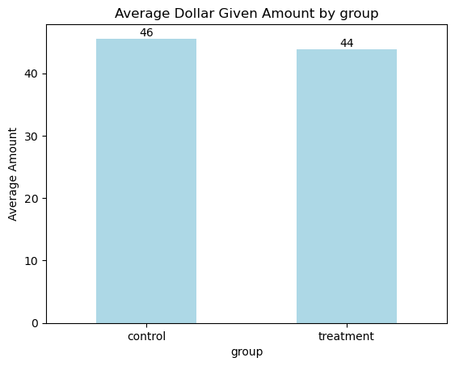
gave1_ratio = karlan_df[karlan_df['gave'] == 1].groupby(karlan_df["ratio"].map({1: "1:1", 2: "2:1", 3: "3:1", "Control": "Control"}))['amount'].mean()
gave1_ratio.plot(kind="bar", color="lightblue")
plt.title("Average Amount Given by Ratio")
plt.xlabel("Ratio")
plt.ylabel("Average Amount Given")
plt.xticks(rotation=0)
for i in range(len(gave1_ratio)):
plt.text(i, gave1_ratio[i], f"{round(gave1_ratio[i])}", ha='center', va='bottom')
plt.show()/tmp/ipykernel_38392/1509173456.py:1: FutureWarning: The default of observed=False is deprecated and will be changed to True in a future version of pandas. Pass observed=False to retain current behavior or observed=True to adopt the future default and silence this warning.
gave1_ratio = karlan_df[karlan_df['gave'] == 1].groupby(karlan_df["ratio"].map({1: "1:1", 2: "2:1", 3: "3:1", "Control": "Control"}))['amount'].mean()
/tmp/ipykernel_38392/1509173456.py:8: FutureWarning: Series.__getitem__ treating keys as positions is deprecated. In a future version, integer keys will always be treated as labels (consistent with DataFrame behavior). To access a value by position, use `ser.iloc[pos]`
plt.text(i, gave1_ratio[i], f"{round(gave1_ratio[i])}", ha='center', va='bottom')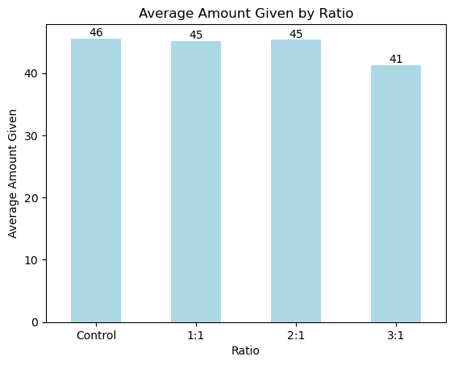
ax = karlan_df[karlan_df["gave"] == 1].groupby("size")["amount"].mean()
ax.plot(kind='bar', color='lightblue')
plt.title("Average Dollar Given Amount by Match threshold")
plt.xlabel("size")
plt.ylabel("Average Amount")
plt.xticks(rotation=0)
for i in range(len(ax)):
plt.text(i, ax[i], f"{round(ax[i])}", ha='center', va='bottom')
plt.show()/tmp/ipykernel_38392/1746374688.py:1: FutureWarning: The default of observed=False is deprecated and will be changed to True in a future version of pandas. Pass observed=False to retain current behavior or observed=True to adopt the future default and silence this warning.
ax = karlan_df[karlan_df["gave"] == 1].groupby("size")["amount"].mean()
/tmp/ipykernel_38392/1746374688.py:8: FutureWarning: Series.__getitem__ treating keys as positions is deprecated. In a future version, integer keys will always be treated as labels (consistent with DataFrame behavior). To access a value by position, use `ser.iloc[pos]`
plt.text(i, ax[i], f"{round(ax[i])}", ha='center', va='bottom')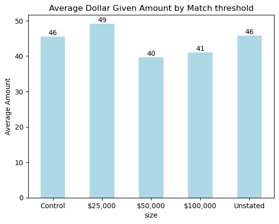
fig, axes = plt.subplots(1, 2, figsize=(12, 5), sharey=False)
# Plot 1: Average Dollar Given Amount by county
grouped_county = karlan_df[karlan_df["gave"] == 1].groupby(["county", "group"])["amount"].mean()
colors = ["pink" if county == "red" else "lightblue" for county, _ in grouped_county.index]
grouped_county.plot(kind='bar', color=colors, ax=axes[0])
axes[0].set_title("Average Dollar Given Amount by county")
axes[0].set_xlabel("County")
axes[0].set_ylabel("Average Amount")
axes[0].tick_params(axis='x', rotation=0, labelsize=9) # Adjust the fontsize here
for i in range(len(grouped_county)):
axes[0].text(i, grouped_county[i], f"{round(grouped_county[i])}", ha='center', va='bottom')
# Plot 2: Response rate of Donation by county
grouped_county = karlan_df.groupby(["county", "group"])["gave"].mean()
colors = ["pink" if county == "red" else "lightblue" for county, _ in grouped_county.index]
grouped_county.plot(kind='bar', color=colors, ax=axes[1])
axes[1].set_title("Response rate of Donation by county")
axes[1].set_xlabel("County")
axes[1].set_ylabel("Response rate")
axes[1].tick_params(axis='x', rotation=0, labelsize=9) # Adjust the fontsize here
for i in range(len(grouped_county)):
axes[1].text(i, grouped_county[i], f"{round(grouped_county[i]*100, 2)}%", ha='center', va='bottom')
plt.tight_layout()
plt.show()/tmp/ipykernel_38392/2640907076.py:13: FutureWarning: Series.__getitem__ treating keys as positions is deprecated. In a future version, integer keys will always be treated as labels (consistent with DataFrame behavior). To access a value by position, use `ser.iloc[pos]`
axes[0].text(i, grouped_county[i], f"{round(grouped_county[i])}", ha='center', va='bottom')
/tmp/ipykernel_38392/2640907076.py:25: FutureWarning: Series.__getitem__ treating keys as positions is deprecated. In a future version, integer keys will always be treated as labels (consistent with DataFrame behavior). To access a value by position, use `ser.iloc[pos]`
axes[1].text(i, grouped_county[i], f"{round(grouped_county[i]*100, 2)}%", ha='center', va='bottom')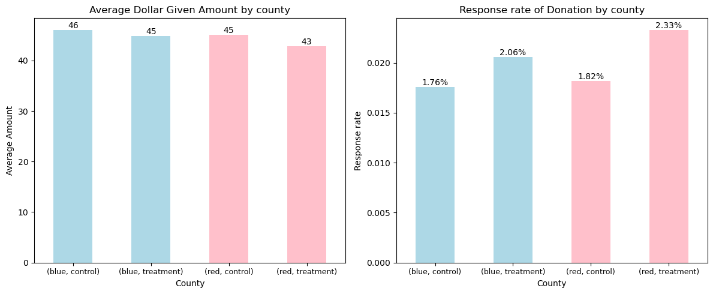
grouped_county = karlan_df[karlan_df["gave"] == 1].groupby(["county", "group"])["amount"].mean()
colors = ["pink" if county == "red" else "lightblue" for county,_ in grouped_county.index]
grouped_county.plot(kind='bar', color=colors)
plt.title("Average Dollar Given Amount by county")
plt.xlabel("county")
plt.ylabel("Average Amount")
plt.xticks(rotation=0)
for i in range(len(grouped_county)):
plt.text(i, grouped_county[i], f"{round(grouped_county[i])}", ha='center', va='bottom')
plt.show()/tmp/ipykernel_38392/3334000609.py:10: FutureWarning: Series.__getitem__ treating keys as positions is deprecated. In a future version, integer keys will always be treated as labels (consistent with DataFrame behavior). To access a value by position, use `ser.iloc[pos]`
plt.text(i, grouped_county[i], f"{round(grouped_county[i])}", ha='center', va='bottom')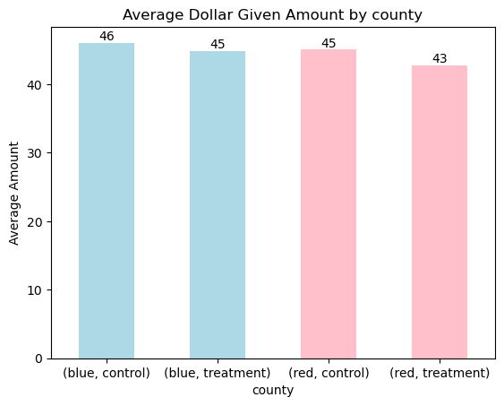
grouped_county = karlan_df.groupby(["county", "group"])["gave"].mean()
colors = ["pink" if county == "red" else "lightblue" for county,_ in grouped_county.index]
grouped_county.plot(kind='bar', color=colors)
plt.title("Response rate of Donation by county")
plt.xlabel("county")
plt.ylabel("Response rate")
plt.xticks(rotation=0)
for i in range(len(grouped_county)):
plt.text(i, grouped_county[i], f"{round(grouped_county[i]*100, 2)}%", ha='center', va='bottom')
plt.show()/tmp/ipykernel_38392/683103117.py:10: FutureWarning: Series.__getitem__ treating keys as positions is deprecated. In a future version, integer keys will always be treated as labels (consistent with DataFrame behavior). To access a value by position, use `ser.iloc[pos]`
plt.text(i, grouped_county[i], f"{round(grouped_county[i]*100, 2)}%", ha='center', va='bottom')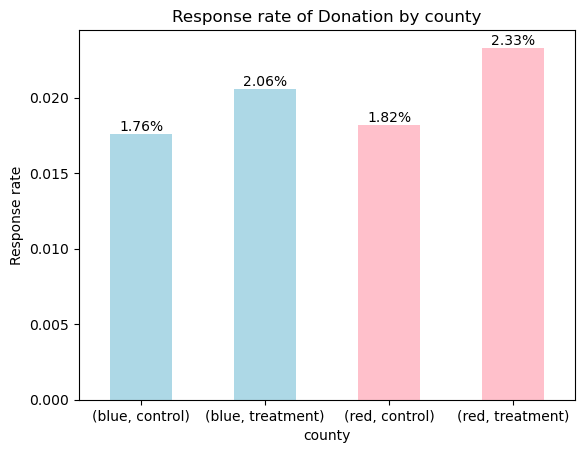
fig, axes = plt.subplots(1, 2, figsize=(12, 5), sharey=False)
# Plot 1: Average Dollar Given Amount by State
grouped = karlan_df[karlan_df["gave"] == 1].groupby(["state", "group"])["amount"].mean()
colors = ["lightblue" if state == "blue" else "pink" for state, _ in grouped.index]
grouped.plot(kind="bar", color=colors, ax=axes[0])
axes[0].set_title("Average Dollar Given Amount by State")
axes[0].set_xlabel("State and Group")
axes[0].set_ylabel("Average Amount")
axes[0].tick_params(axis='x', rotation=0)
for i in range(len(grouped)):
axes[0].text(i, grouped[i], f"{round(grouped[i])}", ha='center', va='bottom')
# Plot 2: Response Rate of Donation by State
grouped = karlan_df.groupby(["state", "group"])["gave"].mean()
colors = ["lightblue" if state == "blue" else "pink" for state, _ in grouped.index]
grouped.plot(kind="bar", color=colors, ax=axes[1])
axes[1].set_title("Response Rate of Donation by State")
axes[1].set_xlabel("State and Group")
axes[1].set_ylabel("Response Rate")
axes[1].tick_params(axis='x', rotation=0)
for i in range(len(grouped)):
axes[1].text(i, grouped[i], f"{round(grouped[i]*100, 2)}%", ha='center', va='bottom')
plt.tight_layout()
plt.show()/tmp/ipykernel_38392/3635852891.py:13: FutureWarning: Series.__getitem__ treating keys as positions is deprecated. In a future version, integer keys will always be treated as labels (consistent with DataFrame behavior). To access a value by position, use `ser.iloc[pos]`
axes[0].text(i, grouped[i], f"{round(grouped[i])}", ha='center', va='bottom')
/tmp/ipykernel_38392/3635852891.py:25: FutureWarning: Series.__getitem__ treating keys as positions is deprecated. In a future version, integer keys will always be treated as labels (consistent with DataFrame behavior). To access a value by position, use `ser.iloc[pos]`
axes[1].text(i, grouped[i], f"{round(grouped[i]*100, 2)}%", ha='center', va='bottom')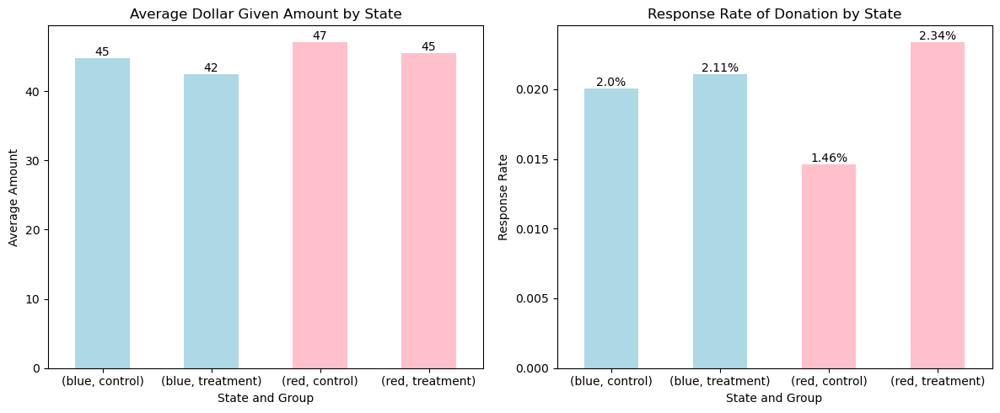
grouped = karlan_df[karlan_df["gave"] == 1].groupby(["state", "group"])["amount"].mean()
colors = ["lightblue" if state == "blue" else "pink" for state, _ in grouped.index]
grouped.plot(kind="bar", color=colors)
plt.title("Average Dollar Given Amount by State")
plt.xlabel("State and Group")
plt.ylabel("Average Amount")
plt.xticks(rotation=0)
for i in range(len(grouped)):
plt.text(i, grouped[i], f"{round(grouped[i])}", ha='center', va='bottom')
plt.show()/tmp/ipykernel_38392/4144588813.py:11: FutureWarning: Series.__getitem__ treating keys as positions is deprecated. In a future version, integer keys will always be treated as labels (consistent with DataFrame behavior). To access a value by position, use `ser.iloc[pos]`
plt.text(i, grouped[i], f"{round(grouped[i])}", ha='center', va='bottom')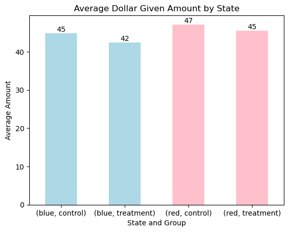
grouped = karlan_df.groupby(["state", "group"])["gave"].mean()
colors = ["lightblue" if state == "blue" else "pink" for state, _ in grouped.index]
grouped.plot(kind="bar", color=colors)
plt.title("Response rate of Donation by State")
plt.xlabel("State and Group")
plt.ylabel("Response rate")
plt.xticks(rotation=0)
for i in range(len(grouped)):
plt.text(i, grouped[i], f"{round(grouped[i]*100, 2)}%", ha='center', va='bottom')
plt.show()/tmp/ipykernel_38392/154559919.py:11: FutureWarning: Series.__getitem__ treating keys as positions is deprecated. In a future version, integer keys will always be treated as labels (consistent with DataFrame behavior). To access a value by position, use `ser.iloc[pos]`
plt.text(i, grouped[i], f"{round(grouped[i]*100, 2)}%", ha='center', va='bottom')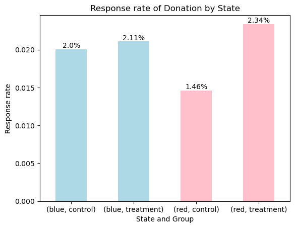
karlan_df[['gave', 'median_hhincome', 'pwhite', 'page18_39']].describe()| gave | median_hhincome | pwhite | page18_39 | |
|---|---|---|---|---|
| count | 50083.000000 | 48209.000000 | 48217.000000 | 48217.000000 |
| mean | 0.020646 | 54815.700533 | 0.819599 | 0.321694 |
| std | 0.142197 | 22027.316665 | 0.168560 | 0.103039 |
| min | 0.000000 | 5000.000000 | 0.009418 | 0.000000 |
| 25% | 0.000000 | 39181.000000 | 0.755845 | 0.258311 |
| 50% | 0.000000 | 50673.000000 | 0.872797 | 0.305534 |
| 75% | 0.000000 | 66005.000000 | 0.938827 | 0.369132 |
| max | 1.000000 | 200001.000000 | 1.000000 | 0.997544 |
Balance Test
non-outcome variable: mrm2
from scipy import stats
# group by treatment and control
treated_mrm2 = karlan_df[karlan_df['group'] == "treatment"]['mrm2'].dropna()
control_mrm2 = karlan_df[karlan_df['group'] == "control"]['mrm2'].dropna()
# t-test
t_stat, p_val = stats.ttest_ind(treated_mrm2, control_mrm2, equal_var=True)
print(f"t-statistic: {t_stat:.3f}, p-value: {p_val:.3f}")t-statistic: 0.119, p-value: 0.905reg = rsm.model.regress({"dakarlan": karlan_df}, rvar="treatment", evar="mrm2")
reg.summary(fit=False)Linear regression (OLS)
Data : dakarlan
Response variable : treatment
Explanatory variables: mrm2
Null hyp.: the effect of x on treatment is zero
Alt. hyp.: the effect of x on treatment is not zero
coefficient std.error t.value p.value
Intercept 0.667 0.003 215.360 < .001 ***
mrm2 0.000 0.000 0.119 0.905
Signif. codes: 0 '***' 0.001 '**' 0.01 '*' 0.05 '.' 0.1 ' ' 1import statsmodels.api as sm
# regression analysis
X = sm.add_constant(karlan_df['treatment'])
y = karlan_df['mrm2']
model = sm.OLS(y, X, missing='drop').fit()
print(model.summary()) OLS Regression Results
==============================================================================
Dep. Variable: mrm2 R-squared: 0.000
Model: OLS Adj. R-squared: -0.000
Method: Least Squares F-statistic: 0.01428
Date: Wed, 23 Apr 2025 Prob (F-statistic): 0.905
Time: 20:34:15 Log-Likelihood: -1.9585e+05
No. Observations: 50082 AIC: 3.917e+05
Df Residuals: 50080 BIC: 3.917e+05
Df Model: 1
Covariance Type: nonrobust
==============================================================================
coef std err t P>|t| [0.025 0.975]
------------------------------------------------------------------------------
const 12.9981 0.094 138.979 0.000 12.815 13.181
treatment 0.0137 0.115 0.119 0.905 -0.211 0.238
==============================================================================
Omnibus: 8031.352 Durbin-Watson: 2.004
Prob(Omnibus): 0.000 Jarque-Bera (JB): 12471.135
Skew: 1.163 Prob(JB): 0.00
Kurtosis: 3.751 Cond. No. 3.23
==============================================================================
Notes:
[1] Standard Errors assume that the covariance matrix of the errors is correctly specified.non-outcome variable: median_hhincome
treated_mh = karlan_df[karlan_df['group'] == "treatment"]['median_hhincome'].dropna()
control_mh = karlan_df[karlan_df['group'] == "control"]['median_hhincome'].dropna()
t_stat, p_val = stats.ttest_ind(treated_mh, control_mh, equal_var=True)
print(f"t-statistic: {t_stat:.3f}, p-value: {p_val:.3f}")t-statistic: -0.742, p-value: 0.458reg = rsm.model.regress({"dakarlan": karlan_df}, rvar="treatment", evar="median_hhincome")
reg.summary(fit=False)Linear regression (OLS)
Data : dakarlan
Response variable : treatment
Explanatory variables: median_hhincome
Null hyp.: the effect of x on treatment is zero
Alt. hyp.: the effect of x on treatment is not zero
coefficient std.error t.value p.value
Intercept 0.671 0.006 116.647 < .001 ***
median_hhincome -0.000 0.000 -0.742 0.458
Signif. codes: 0 '***' 0.001 '**' 0.01 '*' 0.05 '.' 0.1 ' ' 1non-outcome variable: freq
treated_freq = karlan_df[karlan_df['group'] == "treatment"]['freq'].dropna()
control_freq = karlan_df[karlan_df['group'] == "control"]['freq'].dropna()
t_stat, p_val = stats.ttest_ind(treated_freq, control_freq, equal_var=True)
print(f"t-statistic: {t_stat:.3f}, p-value: {p_val:.3f}")t-statistic: -0.111, p-value: 0.912reg = rsm.model.regress({"karlan": karlan_df}, rvar="treatment", evar="freq")
reg.summary(fit=False)Linear regression (OLS)
Data : karlan
Response variable : treatment
Explanatory variables: freq
Null hyp.: the effect of x on treatment is zero
Alt. hyp.: the effect of x on treatment is not zero
coefficient std.error t.value p.value
Intercept 0.667 0.003 258.746 < .001 ***
freq -0.000 0.000 -0.111 0.912
Signif. codes: 0 '***' 0.001 '**' 0.01 '*' 0.05 '.' 0.1 ' ' 1non-outcome variable: female
treated_female = karlan_df[karlan_df["group"] == "treatment"]["female"].dropna()
control_female = karlan_df[karlan_df["group"] == "control"]["female"].dropna()
t_test, p_val = stats.ttest_ind(treated_female, control_female, equal_var=True)
print(f"t-statistic: {t_test:.3f}, p-value: {p_val:.3f}")t-statistic: -1.758, p-value: 0.079reg = rsm.model.regress({"dakarlan": karlan_df}, rvar="treatment", evar="female")
reg.summary(fit=False)Linear regression (OLS)
Data : dakarlan
Response variable : treatment
Explanatory variables: female
Null hyp.: the effect of x on treatment is zero
Alt. hyp.: the effect of x on treatment is not zero
coefficient std.error t.value p.value
Intercept 0.669 0.003 266.731 < .001 ***
female -0.008 0.005 -1.758 0.079 .
Signif. codes: 0 '***' 0.001 '**' 0.01 '*' 0.05 '.' 0.1 ' ' 1Experimental Results
Charitable Contribution Made
gave_by_group = karlan_df.groupby("group")["gave"].value_counts(normalize=True).unstack()
gave_by_group.plot(kind="bar", stacked=True, color=("lightblue", "lightpink"))
plt.title("Proportation of people who denoted by Group")
plt.xlabel("Group")
plt.ylabel("Proportion")
plt.xticks(rotation=0)
plt.legend(title="Gave", loc="upper right")
for i, (gave_by_group, row) in enumerate(gave_by_group.iterrows()):
for j, value in enumerate(row):
if j == 1:
plt.text(i, value+1, f"{value*100:.1f}%", ha="center", va="top", fontsize=10)
else:
plt.text(i, value/2, f"{value*100:.1f}%", ha="center", va="center", fontsize=10)
plt.show()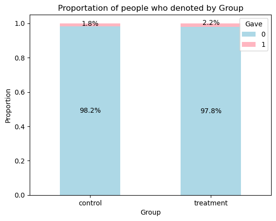
treated_gave = karlan_df[karlan_df['group'] == "treatment"]['gave'].dropna()
control_gave = karlan_df[karlan_df['group'] == "control"]['gave'].dropna()
t_stat, p_val = stats.ttest_ind(treated_gave, control_gave, equal_var=True)
print(f"t-statistic: {t_stat:.3f}, p-value: {p_val:.3f}")t-statistic: 3.101, p-value: 0.002from statsmodels.discrete.discrete_model import Probit
X = sm.add_constant(karlan_df["treatment"])
probit_model = Probit(karlan_df["gave"], X).fit()
print(probit_model.summary())Optimization terminated successfully.
Current function value: 0.100443
Iterations 7
Probit Regression Results
==============================================================================
Dep. Variable: gave No. Observations: 50083
Model: Probit Df Residuals: 50081
Method: MLE Df Model: 1
Date: Wed, 23 Apr 2025 Pseudo R-squ.: 0.0009783
Time: 20:16:14 Log-Likelihood: -5030.5
converged: True LL-Null: -5035.4
Covariance Type: nonrobust LLR p-value: 0.001696
==============================================================================
coef std err z P>|z| [0.025 0.975]
------------------------------------------------------------------------------
const -2.1001 0.023 -90.073 0.000 -2.146 -2.054
treatment 0.0868 0.028 3.113 0.002 0.032 0.141
==============================================================================Differences between Match Rates
ratio_gave = karlan_df[karlan_df["ratio"] == 1]["gave"].dropna()
ratio2_gave = karlan_df[karlan_df["ratio"] == 2]["gave"].dropna()
ratio3_gave = karlan_df[karlan_df["ratio"] == 3]["gave"].dropna()
ratio_control_gave = karlan_df[karlan_df["ratio"] == "Control"]["gave"].dropna()
pairs = [
("ratio1 & ratio2", ratio_gave, ratio2_gave),
("ratio1 & ratio3", ratio_gave, ratio3_gave),
("ratio1 & control", ratio_gave, ratio_control_gave),
("ratio2 & ratio3", ratio2_gave, ratio3_gave),
("ratio2 & control", ratio2_gave, ratio_control_gave),
("ratio3 & control", ratio3_gave, ratio_control_gave),
]
for label, group1, group2 in pairs:
t_stat, p_val = stats.ttest_ind(group1, group2, equal_var=True)
print(f"{label}: t-statistic: {t_stat:.3f}, p-value: {p_val:.3f}")ratio1 & ratio2: t-statistic: -0.965, p-value: 0.335
ratio1 & ratio3: t-statistic: -1.015, p-value: 0.310
ratio1 & control: t-statistic: 1.730, p-value: 0.084
ratio2 & ratio3: t-statistic: -0.050, p-value: 0.960
ratio2 & control: t-statistic: 2.804, p-value: 0.005
ratio3 & control: t-statistic: 2.859, p-value: 0.004reg = rsm.model.regress({"karlan": karlan_df}, rvar="gave", evar="ratio")
reg.summary(fit=False)Linear regression (OLS)
Data : karlan
Response variable : gave
Explanatory variables: ratio
Null hyp.: the effect of x on gave is zero
Alt. hyp.: the effect of x on gave is not zero
coefficient std.error t.value p.value
Intercept 0.018 0.001 16.225 < .001 ***
ratio[1] 0.003 0.002 1.661 0.097 .
ratio[2] 0.005 0.002 2.744 0.006 **
ratio[3] 0.005 0.002 2.802 0.005 **
Signif. codes: 0 '***' 0.001 '**' 0.01 '*' 0.05 '.' 0.1 ' ' 1response_rate_ratio1 = karlan_df[karlan_df["ratio"] == 1]["gave"].mean().round(4)
response_rate_ratio2 = karlan_df[karlan_df["ratio"] == 2]["gave"].mean().round(4)
response_rate_ratio3 = karlan_df[karlan_df["ratio"] == 3]["gave"].mean().round(4)
response_rate_control = karlan_df[karlan_df["ratio"] == "Control"]["gave"].mean().round(4)
response_rate = pd.Series({
"ratio1": response_rate_ratio1,
"ratio2": response_rate_ratio2,
"ratio3": response_rate_ratio3,
"control": response_rate_control
})
response_rate
response_rate.plot(kind="bar", color="lightblue")
plt.title("Response Rate by Ratio")
plt.xlabel("Ratio")
plt.ylabel("Response Rate")
plt.xticks(rotation=0)
for i, value in enumerate(response_rate):
plt.text(i, value, f"{value*100:.2f}%", ha="center", va="bottom", fontsize=10)
plt.show()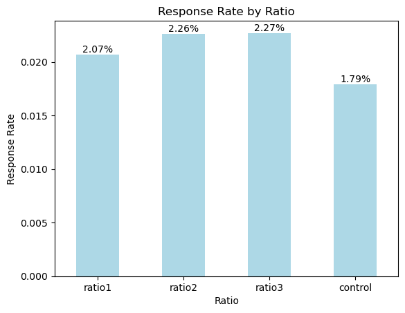
Size of Charitable Contribution
treated_amount = karlan_df[karlan_df['group'] == "treatment"]['amount'].dropna()
control_amount = karlan_df[karlan_df['group'] == "control"]['amount'].dropna()
t_stat, p_val = stats.ttest_ind(treated_amount, control_amount, equal_var=True)
print(f"t-statistic: {t_stat:.3f}, p-value: {p_val:.3f}")t-statistic: 1.861, p-value: 0.063reg = rsm.model.regress({"karlan": karlan_df}, rvar="treatment", evar="amount")
reg.summary(fit=False)Linear regression (OLS)
Data : karlan
Response variable : treatment
Explanatory variables: amount
Null hyp.: the effect of x on treatment is zero
Alt. hyp.: the effect of x on treatment is not zero
coefficient std.error t.value p.value
Intercept 0.666 0.002 314.669 < .001 ***
amount 0.000 0.000 1.861 0.063 .
Signif. codes: 0 '***' 0.001 '**' 0.01 '*' 0.05 '.' 0.1 ' ' 1treated_gave_amount = karlan_df[(karlan_df['group'] == "treatment") & (karlan_df['gave'] == 1)]['amount'].dropna()
control_gave_amount = karlan_df[(karlan_df['group'] == "control") & (karlan_df['gave'] == 1)]['amount'].dropna()
t_stat, p_val = stats.ttest_ind(treated_gave_amount, control_gave_amount, equal_var=True)
print(f"t-statistic: {t_stat:.3f}, p-value: {p_val:.3f}")t-statistic: -0.581, p-value: 0.561reg = rsm.model.regress({"karlan": karlan_df[karlan_df["gave"] == 1]}, rvar="treatment", evar="amount")
reg.summary(fit=False)Linear regression (OLS)
Data : karlan
Response variable : treatment
Explanatory variables: amount
Null hyp.: the effect of x on treatment is zero
Alt. hyp.: the effect of x on treatment is not zero
coefficient std.error t.value p.value
Intercept 0.72 0.021 35.055 < .001 ***
amount -0.00 0.000 -0.581 0.561
Signif. codes: 0 '***' 0.001 '**' 0.01 '*' 0.05 '.' 0.1 ' ' 1treated_gave_amount = karlan_df[(karlan_df["group"] == "treatment") & (karlan_df['gave'] == 1)]['amount'].dropna()
avg_treated_gave_amount = treated_gave_amount.mean()
control_gave_amount = karlan_df[(karlan_df["group"] == "control") & (karlan_df['gave'] == 1)]['amount'].dropna()
avg_control_gave_amount = control_gave_amount.mean()
fig, axes = plt.subplots(1, 2, figsize=(8, 4), sharey=True)
# Plot for Control Group
control_gave_amount.plot(kind="hist", bins=20, color="lightblue", alpha=0.7, ax=axes[0])
axes[0].axvline(avg_control_gave_amount, color="red", linestyle="--", linewidth=2, label=f"Mean: {avg_control_gave_amount:.2f}")
axes[0].legend()
axes[0].set_title("Distribution of Gave Amount for Control Group", fontsize=10)
axes[0].set_xlabel("Amount")
axes[0].set_ylabel("Frequency")
# Plot for Treatment Group
treated_gave_amount.plot(kind="hist", bins=20, color="lightblue", alpha=0.7, ax=axes[1])
axes[1].axvline(avg_treated_gave_amount, color="red", linestyle="--", linewidth=2, label=f"Mean: {avg_treated_gave_amount:.2f}")
axes[1].legend()
axes[1].set_title("Distribution of Gave Amount for Treatment Group", fontsize=10)
axes[1].set_xlabel("Amount")
plt.tight_layout()
plt.show()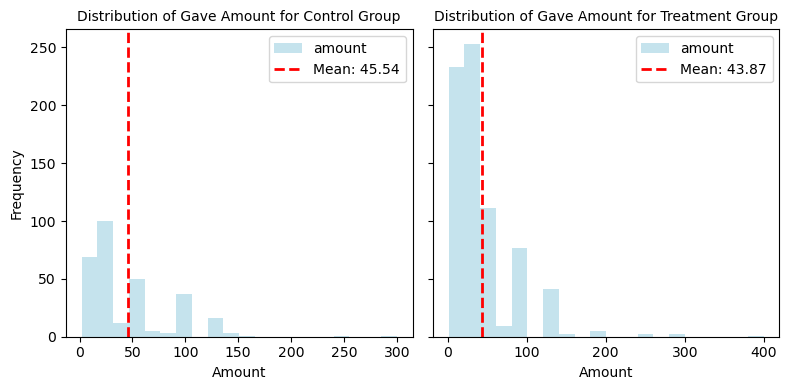
treated_gave_amount = karlan_df[(karlan_df["group"] == "treatment") & (karlan_df['gave'] == 1)]['amount'].dropna()
avg_treated_gave_amount = treated_gave_amount.mean()
treated_gave_amount.plot(kind="hist", bins=20, color="lightblue", alpha=0.7)
plt.axvline(avg_treated_gave_amount, color="red", linestyle="--", linewidth=2, label=f"Mean: {avg_treated_gave_amount:.2f}")
plt.legend()
plt.title("Distribution of Gave Amount for Treatment Group")
plt.xlabel("Amount")
plt.ylabel("Frequency")
plt.show()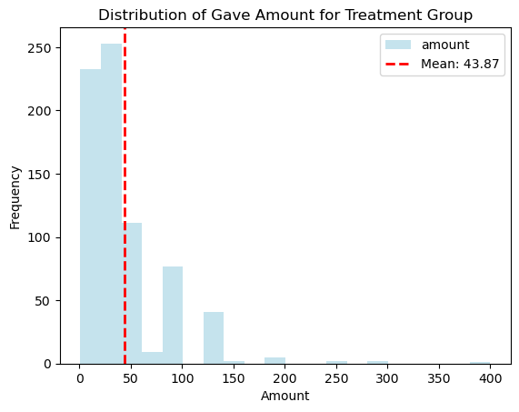
control_gave_amount = karlan_df[(karlan_df["group"] == "control") & (karlan_df['gave'] == 1)]['amount'].dropna()
avg_control_gave_amount = control_gave_amount.mean()
control_gave_amount.plot(kind="hist", bins=20, color="lightblue", alpha=0.7)
plt.axvline(avg_control_gave_amount, color="red", linestyle="--", linewidth=2, label=f"Mean: {avg_control_gave_amount:.2f}")
plt.legend()
plt.title("Distribution of Gave Amount for Control Group")
plt.xlabel("Amount")
plt.ylabel("Frequency")
plt.show()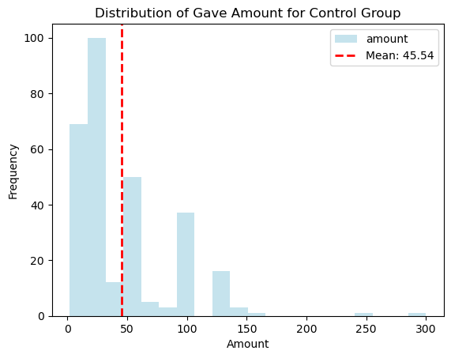
Simulation Experiment
Law of Large Numbers
import numpy as np
import matplotlib.pyplot as plt
# Parameters Setting
np.random.seed(0)
p_control = 0.018
p_treatment = 0.022
n_control = 100_000
n_treatment = 10_000
# Simulate donatioin outcomes (Bernoulli distribution)
control = np.random.binomial(1, p_control, size=n_control)
treatment = np.random.binomial(1, p_treatment, size=n_treatment)
# Sample the first 10,000 control observations to match treatment
control_sample = control[:n_treatment]
# Difference = treatment - control
diffs = treatment - control_sample
# Calculate the cumulative average of differences
cumulative_avg = np.cumsum(diffs) / np.arange(1, n_treatment + 1)
# Plot the cumulative average and the true difference line
plt.figure(figsize=(8, 4))
plt.plot(cumulative_avg, label="Cumulative average of difference", color="lightblue")
plt.axhline(y=0.004, color="red", linestyle="--", label="True difference (0.004)")
plt.xlabel("Number of Simulations")
plt.ylabel("Cumulative Average")
plt.title("Law of Large Numbers Simulation")
plt.legend()
plt.tight_layout()
plt.show()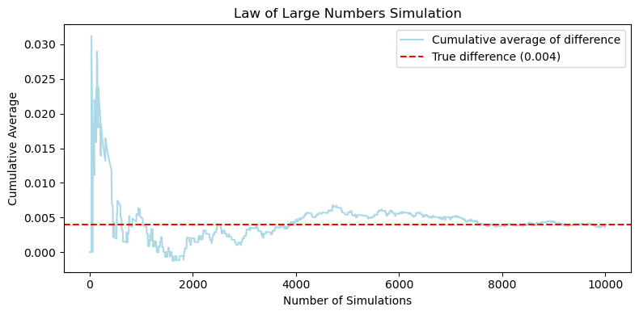
Central Limit Theorem
import numpy as np
import matplotlib.pyplot as plt
# Parameters Setting
np.random.seed(42)
p_control = 0.018
p_treatment = 0.022
sample_sizes = [50, 200, 500, 1000]
n_simulations = 1000
fig, axes = plt.subplots(2, 2, figsize=(8, 8))
axes = axes.flatten()
for idx, n in enumerate(sample_sizes):
diffs = []
# Simulate n_simulations times
for _ in range(n_simulations):
control = np.random.binomial(1, p_control, n)
treatment = np.random.binomial(1, p_treatment, n)
diff = np.mean(treatment) - np.mean(control)
diffs.append(diff)
# Plot the histogram of differences
ax = axes[idx]
ax.hist(diffs, bins=30, color="skyblue", edgecolor="black", alpha=0.75)
ax.axvline(x=0, color="red", linestyle="--", linewidth=1.5, label="Zero")
ax.set_title(f"Sample Size = {n}")
ax.set_xlabel("Mean Difference (Treatment - Control)")
ax.set_ylabel("Frequency")
ax.legend()
# Add a title for the entire figure
plt.suptitle("Central Limit Theorem Simulation\nEffect of Sample Size on Distribution of Mean Differences", fontsize=14)
plt.tight_layout(rect=[0, 0, 1, 0.95])
plt.show()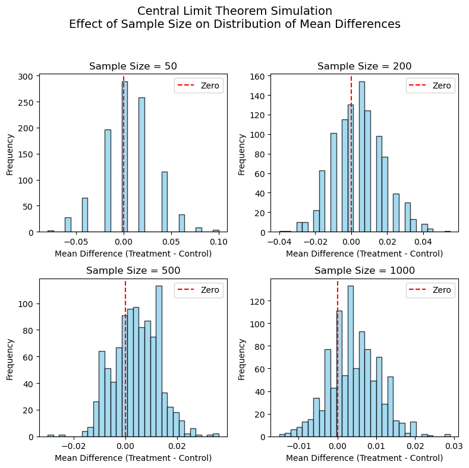